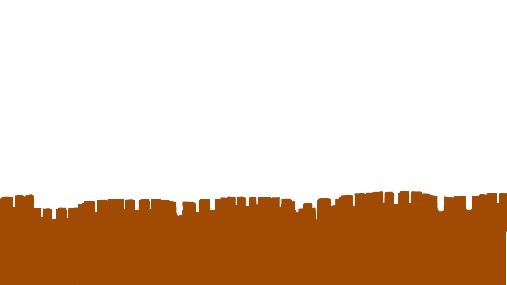
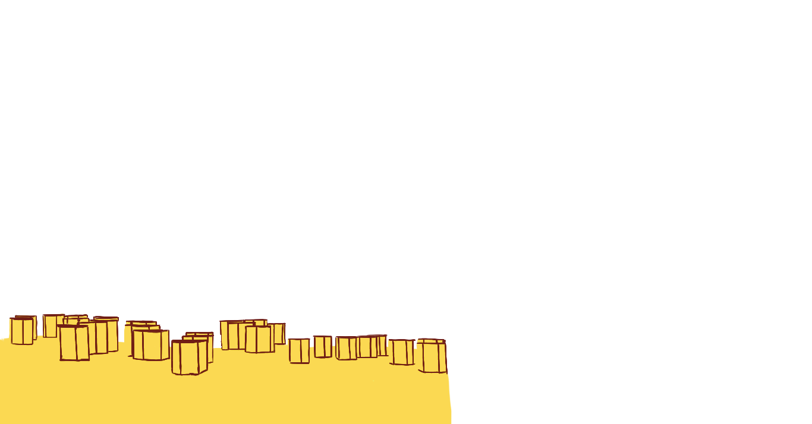
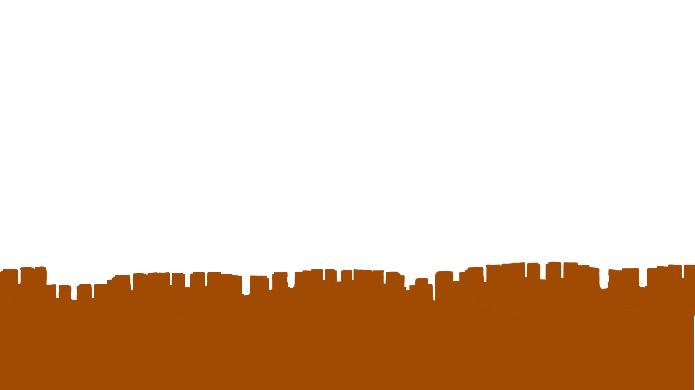
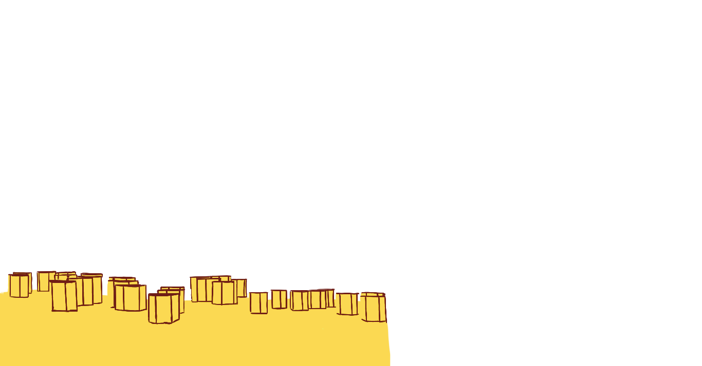
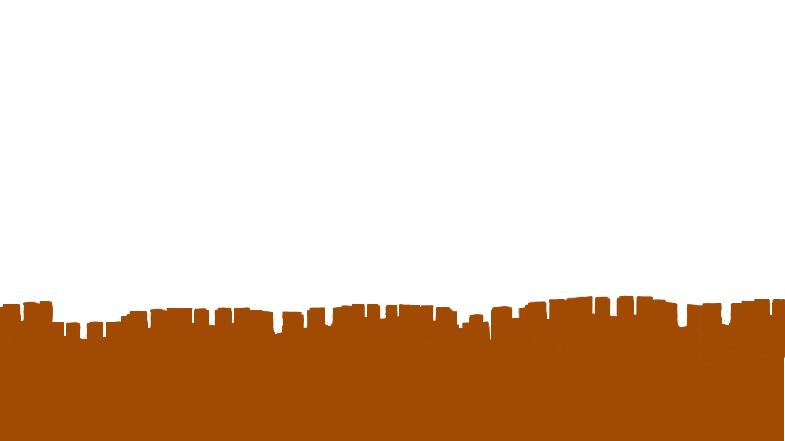
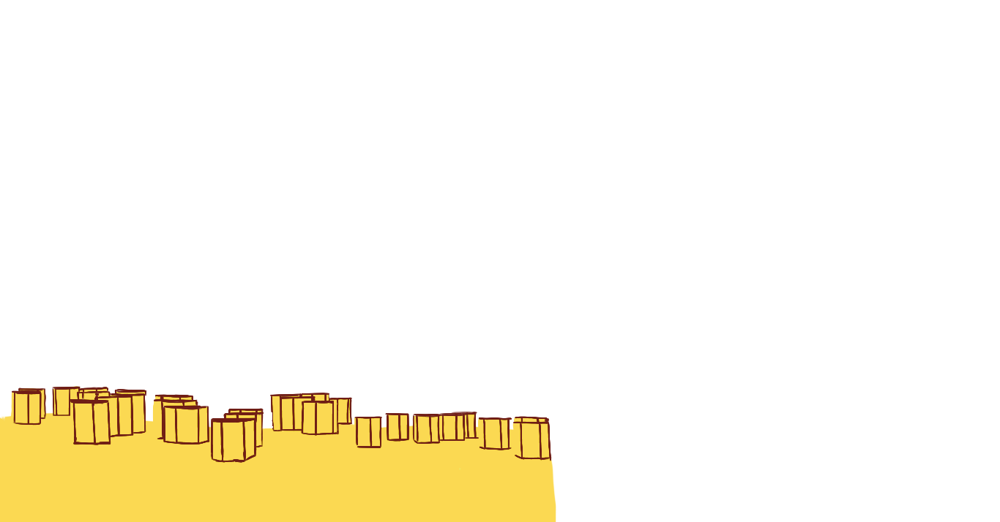
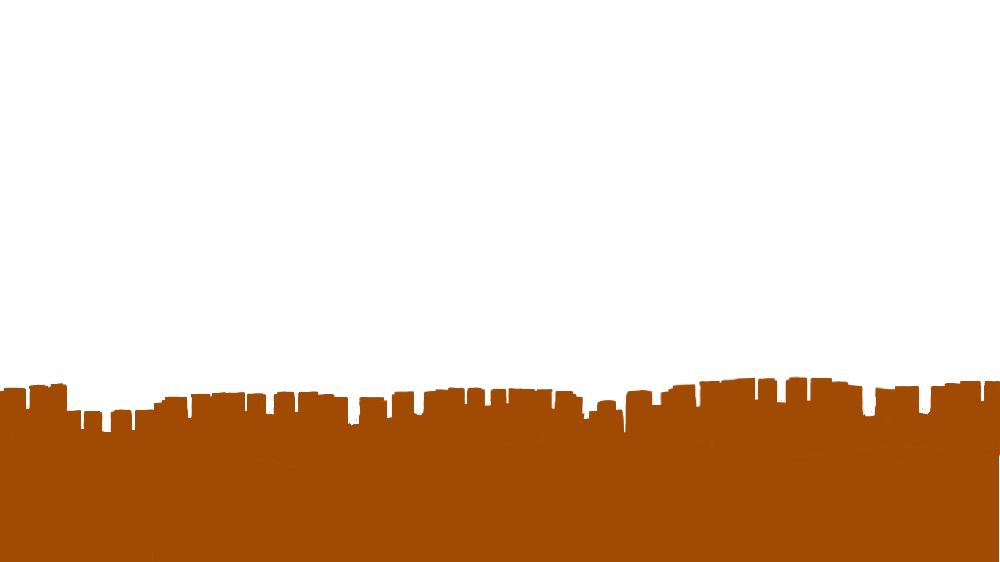
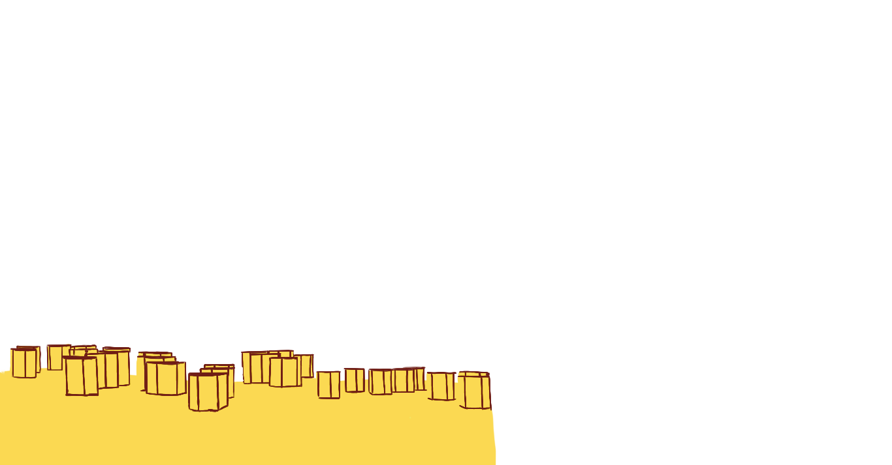

UI UI

 



Meie oleme UIUI – väike, aga kirglik tiim, kelle missioon on aidata inimestel leida rõõmu ja tähendust igapäevaelus. Alustasime oma teekonda aastal 2024, soovides parandada kohalike kogukondade elukvaliteeti. Me usume, et meie pühendumus kvaliteetsele kliendikogemusele ja jätkusuutlikkus muudavad meie teenuse tõeliselt eriliseks.
Meie tiim töötab jätkusuutlikult, et päästa inimesi igavuse ja üksilduse kriisist. Probleemid, mis võivad tänapäeva kiire elutempoga sageli tähelepanuta jääda. Üksildusega aitab meie Anime Abikaasa Test. See aitab leida selle "ühe ja ainsa" läbi lõbusa ja sügavalt isikliku testi. Igavuse Peletamine: Kui üksindus ei ole probleem, aga igavus küll, siis oleme valmis aitama! Sisestage lihtsalt teile meeldivad žanrid ja teemad, ning meie süsteem pakub mitte ainult ühte ega kahte, vaid lausa kolm spetsiifilist soovitust, mis sobivad just teile
Täna oleme uhked, et oleme kasvanud kogukonnaks, mis on aidanud juba tuhandeid inimesi – olgu selleks üksindusest üle saamine või uue meelelahutuse leidmine. Meie töö eesmärk on tuua rohkem rõõmu, naeru ja inspiratsiooni teie ellu.
Anime Test
Vajutage siia, et leida mida järgmisena vaadata!

Abikaasa Test
Vajutage siia, et leida oma ideaalne abikaasa!
Kuula meie soovitatud lugusid: